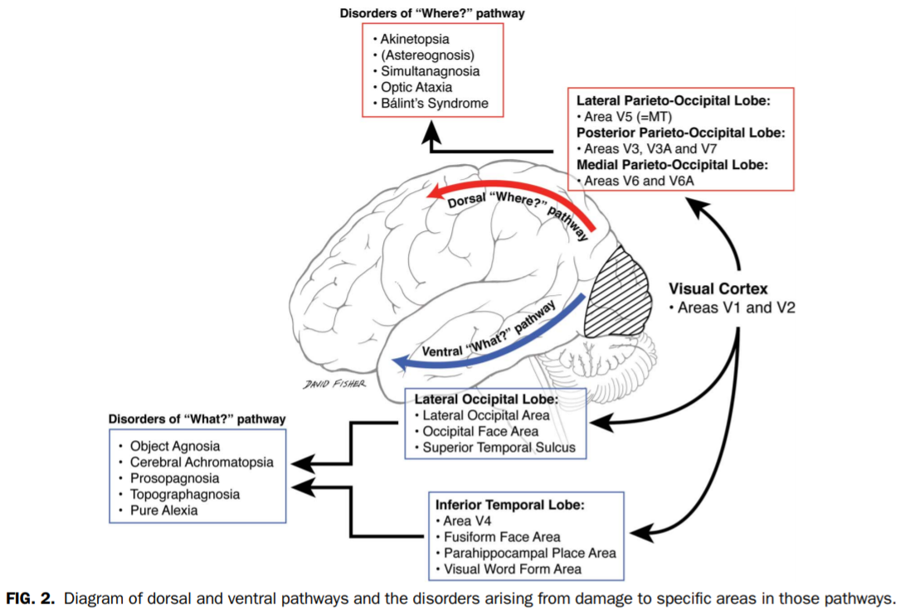

What visual agnosia might feel like
Can you name one thing in this photo? It all looks familiar, but something’s off

Name One Thing In This Photo
Can you name one thing in the image above? It all looks familiar, but something’s off. The image makes “sense” overall; you can see defined shapes and objects, that seems to be placed in a plausible - albeit chaotic - fashion, like some random rubbish thrown in the corner of a room. And yet, chances are you cannot name one single thing of its content.
This image, after appearing on twitter in April 2019, surfaced on reddit with the caption “This picture is designed to give the viewer the simulated experience of having a stroke (particularly in the occipital lobe of the cerebral cortex, where visual perception occurs.) Everything looks hauntingly familiar but you just can’t quite recognize anything", and became viral. However, the author of the caption later admitted that he made it up.
So where does the image come from?
One can trace back the original publication of the image to an instagram account, which author declared having made the image using the ArtBreeder website. This website gives access to a software based on an AI algorithm (Generative Adversarial Networks - GAN), commonly used in the processing and generation of images (one astonishing example can be found on thispersondoesnotexist.com, which generates realistic pictures of non-existing people). There was even some attempts to reverse engineer the process to retrieve the original image.

So, it seems like there is no intelligent design behind this image, no clever neuropsychologist carefully crafting a meaningful experience. Just one of these lucky accident.
Nonetheless, it’s still a intriguing image, falling in this uncanny abyss of things that we recognize as familiar, but slightly too alien for our meaning-seeking brains to dissolve. Could it tell something about brain processes? Surely, but brain disorders? Maybe.
That said, the “occipital stroke” hypothesis mentioned above suggests, by its formulation, a lesion to the primary visual cortices. However, as neuroscientists know, these brain regions, located at the extreme back of the brain, are mostly supporting lower level aspects of visual processing, and their damage is usually related to alterations of a somewhat different nature than of that above, such as vision loss, visual hallucinations, visual deformations, loss of color, movement, stereoscopy, etc.
However, there is another neuropsychological disorder, referred to as “visual agnosia”, in which patients experience difficulties to recognize visually presented objects, despite an intact vision. In fact, it is more an umbrella term for different subcategories of deficits, and the image above could be reminiscent of the associative visual agnosia, which a specific impairment in the assignment of meaning to a stimulus that is accurately perceived (and can be visually described). This symptom is often related to injuries in the left occipito-temporal region, located on the ventral “what” stream of the brain (as opposed to the so-called “where,” dorsal stream).

Ivan Seal’s Art
From there, the youtuber Solar Sands helped me discover one artist, Ivan Seal, which work is indeed somewhat akin to the image above. Not purely abstract renditions, or depictions of impossible entities, but plausible objects that sit in this akward space, between boring reality and total weirdness.


Thanks for reading! Do not hesitate to tweet and share this post and don’t forget to join me on Twitter 🐦 @Dom_Makowski